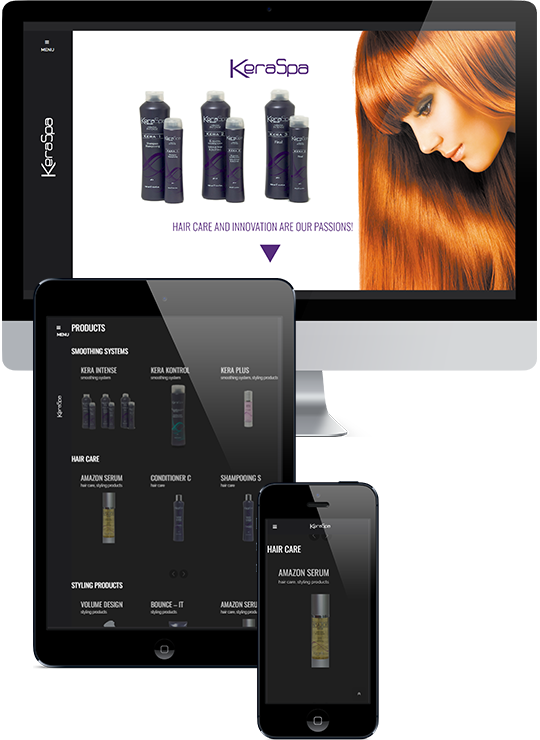

<div id="custom-content" class="white-popup" >
  
  <div class="row">
   <div class="col-md-7">

   
   </div>
  <div class="bottom-align-text col-md-5">
  <h2>KeraSpa Website</h2>
   <p>This site was designed and developed by me from the ground up. It is a WordPress site but with plenty of customizations. The challenge was to present both the company and it’s products in an engaging and interactive way. The end goal was to develop a site in which the user is curious to explore the whole site and get excited about the product lines. 
</p>

    <button  class="btn btn-default"><a href="http://www.keraspa.com" target="_blank">Visit Site</a></button>
    </div>
   
</div>